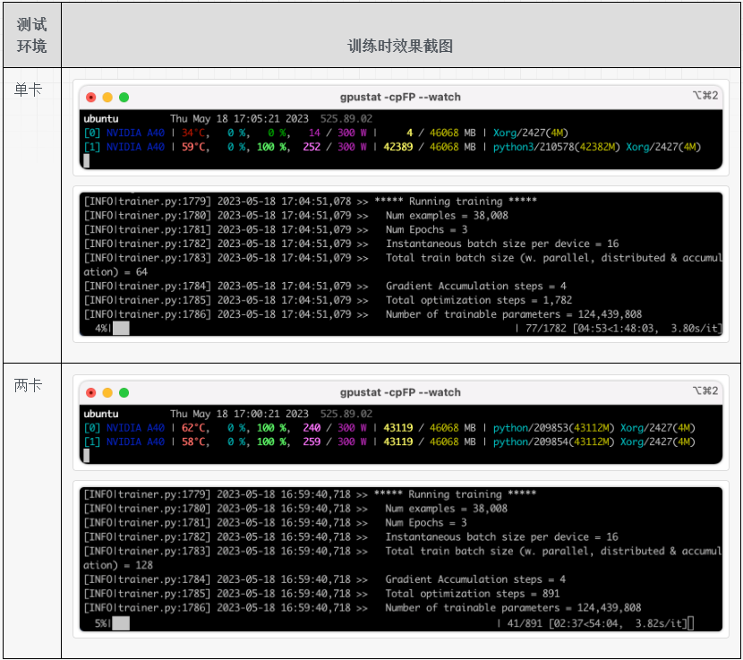

Huggingface - 3.Accelerate
1、生成配置文件: config
参考资料：
https://huggingface.co/docs/accelerate/quicktour#launching-your-distributed-script
生成配置文件命令如下所示，其中 path_to_config.yaml 是生成的配置文件的存储路径：
1 | accelerate config --config_file path_to_config.yaml |
比如生成的一个配置文件的样例为（单节点，2个GPU）：
1 | compute_environment: LOCAL_MACHINE |
2.运行（两卡数据并行）
参考资料：
https://huggingface.co/docs/accelerate/quicktour#launching-your-distributed-script
https://huggingface.co/docs/accelerate/basic_tutorials/launch
2.1 启动命令说明
运行的命令模版如下所示，首先指定上一步骤生成的 accelerate 的配置文件，然后指定训练的脚本，最后一部分是训练脚本中所需的参数：
1 | accelerate launch --config_file path_to_config.yaml \ |
下面直接使用 accelerate 执行一下训练流程，一方面熟悉一下如何启动，另一方面看一下两卡时的加速效果。使用的机器是有2张 A40 显卡的机器，模型采用 gpt2，数据是某个开源数据，大概3W+条数据，使用的代码是 transformers 库中的样例代码，链接为：run_clm 。
2.2 单卡与两卡速度对比
分别测试单卡训练和两卡训练，单卡训练和两卡训练的启动命令如下所示。单卡训练没有使用 accelerate 启动，而是直接使用 python 启动；两卡训练使用 accelerate 启动。
1 | 单卡训练的启动命令 |
训练过程中的截图如下表所示，可以看出无论是单卡还是双卡，GPU的利用率都是比较高的，单卡和两卡的耗时也比较接近两倍关系，加速效果还是比较可观的。

3、暂时略过的一些功能
- 如果要在自己的训练代码中使用 accelerate 库，需要修改哪些代码：参考链接1、参考链接2
- 评估部分如果要做分布式评估，代码需要做哪些修改：参考链接
- 只在主进程中执行某些代码，比如打印进度条，代码要如何写：参考链接
- 模型的加载和存储：参考链接
- 训练过程中整个状态的存储和加载：参考链接1、参考链接2
- 模型很大而显存不足时如何推理：参考链接
- 使用 accelerate 库之后如何实现梯度累积功能：参考链接
DeepSpeed
这个 accelerate 的文档里为什么说对 deepspeed 的支持还在试验中，接口随时会改变，链接: https://huggingface.co/docs/accelerate/quicktour#deepspeed
其他
在阅读 accelerate 的文档时，有一个地方很细节，就是在使用混合精度训练时，如果某一次的梯度溢出了，那么会跳过这个 step，在这个 step 中不对权重进行更新。
到下一个 step 时，根据一定的策略调小参数 loss scaling factor，下一个 step 就可能梯度不再溢出了，然后就继续训练。这个细节的文档为: 参考链接
Comment